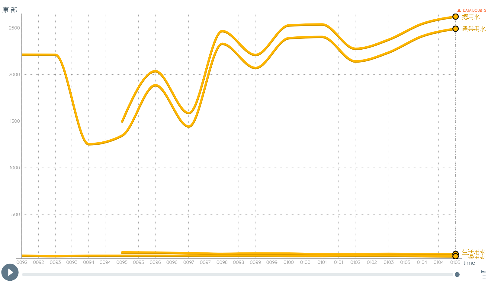

分析
台灣用水
將台灣各地區不同用途的用水量，依照年份統計分別繪製而成。
(一) 以地區為討論基準
1.北部
從圖表上方兩條變化趨勢相近的線條得知，影響北部地區總用水量最多的為農業用水。影響次多的是生活用水，在總用水之中占有一定比例，但不是影響總用量增減的主要原因。相較於另外兩項用途，工業用水量用水占比更少，對北部地區總用水量增減並無太大影響。

2.中部
根據中部用水的圖表可以看見，總用水量的曲線和農業用水的曲線隨時間起伏的樣貌是相似的，可以看出影響中部地區用水最大的是農業上的使用。其他兩項用水對於中部總用水量較無影響。

3.南部
根據圖表得知，總用水量的曲線與農業用水的曲線變化趨勢接近，可以看出影響南部地區總用水量最多是在農業上的使用。其他兩項用水對於中部總用水量較無影響。

4.東部
東部為台灣本島居住人口最少的地區，居民生活用水占東部地區用水比例非常少；在東部不甚發達的工業，其用水量低於生活用水量非常多。根據東部用水的圖表，總用水量的曲線與農業用水的曲線十分接近，與其他用水曲線變化趨勢不慎相同，可以看出在東部地區總用水中占最大比例是在農業上的使用。
5.離島
離島地區用水從民國９７年才開始有數據紀錄。 從圖表中工業用水的線條在底部的情形可以得知，離島地區工業非常不發達。而離島地區又沒有一定規模的農業發展（無此數據），故其總用水量絕大部分都是生活用水，數據趨勢隨生活用水量上下起伏。
(二) 以用途為討論基準
1.農業用水
在民國８６年至１０５年之平均臺灣農業用水中，灌溉用水、養殖用水、畜牧用水，分別占了平均農業用水的８８．６％、１０．６％、０．８％，以灌溉用水佔有約九成之最多數。
(1)灌溉用水
台灣農業灌溉用水可以區分為「水稻用水」與「雜作用水」。將歷年數據平均後計算可得，水稻用水約占農業用水中６９．７％。
以總用量而言，歷年灌溉用水量並無明顯之增減。
從下方圖表中得知，歷年之水稻用水量皆高於雜作用水量。其中雜作用水量於民國９０年開始緩慢上升，而水稻用水則呈現緩慢下降之趨勢。
參考相關文獻後推測此現象與民國９１年台灣加入ＷＴＯ世界貿易組織有關。由於進口農產品的強力競爭，促使台灣農業調整生產結構，種植具技術優勢的產品，例如：種苗、花卉、高級茶、熱帶水果等等，使得民國９１年時雜作用水用量最多。
可從台灣灌溉用水圖表（圖十二）中看到，圖表雖隨年份增加而改變各縣市之數據與排名，代表中部縣市之紫色長條皆停留在前幾名，即中部用於種植水稻水量一直以來都大過其他地區灌溉水稻之用水。而雜作用水並無特定地區用量較多。
(2)養殖用水
以整體而言的總養殖用水量是逐年減少的。
從資料線條上看到，約在民國９７間的養殖總用水量明顯下降，我們進一步分析養殖用水詳細的使用，繪製了另一張圖表。
臺灣養殖用水主要使用的作物有蜆、虱目魚、海水蝦類等。從圖表上可以看到，約在民國９７年間，過去耗水最大之蜆與海水蝦類用水大量減少，虱目魚的耗水量僅微增加，造成此時段以後養殖用水量呈現漸少之趨勢。
(3)畜牧用水
從圖表上能看到約民國９７年時，畜牧用水的數據線條明顯下降，我們進一步分析畜牧用水詳細的使用，繪製了另一張圖表。
臺灣之畜牧用水中，分為畜類與禽類，平均畜類用水約占８０．７２％，其中用水量最多為豬隻，其次為雞，第三多為乳牛。經文獻探討後推測用水減少原因為，民國９７年時，國內爆發H5N2低病原禽流感疫情，使得雞跟鴨隻養殖數量驟減，因此臺灣之畜牧用水開始明顯下降。
2.工業用水
(1)工業用水來源
臺灣工業用水來源分為「自行取水」與「自來水」兩部分。統計民國８６年至民國１０５年之工業用水來源並繪製成圖表，可以得知自行取水量逐年減少，而自來水量則逐年增加。推測過去工業用水中自來水使用百分比偏少，而多採自行取水的原因如下：
- 未設置工業專用供水系統。
- 由自來水供應之水價與一般用水相同，使用自來水供應使得成本增加，高於自行取水成本之差距太大。
- 部分工廠用水要求水質特殊，或不適用含氯或消毒藥劑之自來水，而採取自行取水。
自來水用量從有紀錄之８６年起便持續增加，自行取水量約在民國９０年間開始明顯下降。我們推論與臺灣經濟成長有關。經濟成長促使更多工業有能力使用自來水以替代自行取水；同期間政府開始推廣節約用水，故自行取水的減少亦與政府推廣節約用水有關。
(2)工業用水用量
台灣工業用水各年用量皆有上下起伏，並非逐年以一定趨勢增加或減少，自民國８７年至民國１０５年，此段時間歷年總用量呈現非常小幅度的上升，需調整表格縱軸間距才可看出些微變化趨勢。整體而言之用量無太大變動。
(3)各產業用水
民國８７年至民國１０５年間之工業用水量，分別由化學材料製造業、紡織業、紙漿紙及紙製品業、食品製造業之用水量為前四大耗水量最大之產業。
其中食品製造業在民國９６年以前數據皆呈現０。參考文獻得知，食品製造業之數據在民國９６年以前皆呈現０的原因為，行政院主計總處於民國９５年５月第８次修訂＜中華民國行業標準分類＞時，才將食品製造業列入，此後開始有此項數據紀錄；民國１０１年的數據急遽下降為０，隔年又上升回與前年相似數值之第四名。我們推測原因為，當時沒有調查該數據或者該數據因人為疏失而登記錯誤導致。